전시 보러 갈래? - 이주요와 함께 1
<
1. 김성환의 작업관 그리고 Room 1에 관한 단상
작가는 작품으로 말한다.
한 점의 조각, 한 장의 사진, 한 편의 영상과 같은 작품Piece에는 작가의 수많은 선택들이 집약되어 있다. 그것은 작가의 현실과 세계관으로부터 비롯된 사유의 결과물인 동시에, 살아있는 사건[1]이다. 그것은 전시를 통해 관객에게 미적 감상의 대상이 되기도 하며 사상의 마중물이 되어 그 관계자로 하여금 참여를 유도하기도 한다.
작품을 대상에 관한 고정된 사유의 결과[2]로써 여길 때, 전시는 일방적인 발표의 장이 된다. 모든 의미가 말끔히 결정된 곳 앞에서 관객은 작품을 보고, 그 옆에 적힌 의미를 발음하고, 뒤돌아서 잊어버린다. 넓은 공간에서 화려한 조명을 받는 상품의 자리와 작품의 생애가 크게 다르지 않아 보이는 지금 이 시대에 작품은 관객에게 어떠한 경험을 매개할 수 있을까?
김성환은 한 점의 작품만으로 말하지 않는다.
김성환은 하나의 대상을 제시할 때 그 대상 x와 유비 관계를 이루는 또 다른 대상 x′를 함께 제시하곤 한다. 그럼으로써 x 자체보다, 그 둘 사이의 관계항을 드러내어 보이게 하는 일에 관심이 있다.
일례로, 하와이어로 쓰인 이번 개인전의 제목을 한국어로 번역한 내용은 ‘그는 그에게서 배웠다 배웠다. 그에 의해 가르침을’이다. 이 구절에 대명사인 ‘그’는 총 세 번 나오는데, 첫 번째 ‘그’와 두 번째 ‘그’, 세 번째 ‘그’는 문자상으로 구분되지 않는다. 이러한 구조는 누가 누구에게 교육을 하고 받는지의 영향 관계가 일방향적이지만은 않다는 사실을 넌지시 열어둔다. 그럼으로써 다수의 등식을 가능하게 한다.
여기서 작품은, 서로 다른 대상 사이에 그려지는 하나의 화살표이다. 그리고 그 화살표는 김성환의 다중 연구 연작 <표해록>을 매개로 하와이와 한국 사이를 부지런히 오간다. 전시 《Ua a‘o ‘ia ‘o ia e ia 우아 아오 이아 오 이아 에 이아》는 그 끊임없는 궤적의 기록이자, 진행 중인 화살표의 현재이다.
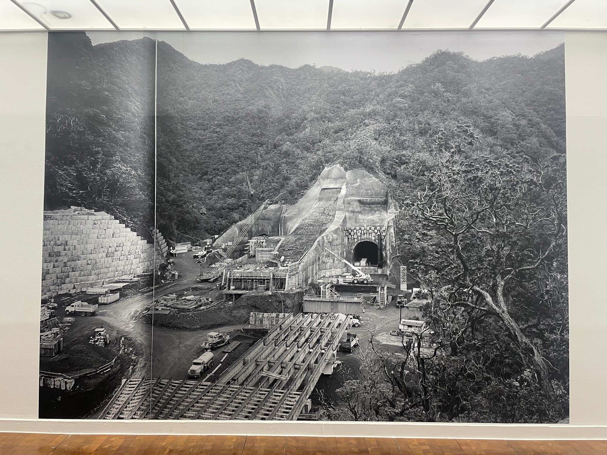
사진: 재훈
Room 1은 본 전시의 커다란 축인 하와이와 한국이 (아카이브 전시의 문법으로) 소개되고, 만나는 곳이다. 이 공간은 크게 하와이 트리엔날레 2022를 발췌하고 재구성한 파트와 설치 작품 <몸 컴플렉스>로 이루어져 있는데, 이 중 전자는 하와이가 미국으로부터 통치를 받은 피식민지였다는 역사적 사실을 관객에게 전달한다.
그 하나의 예시로, Room 1의 입구 쪽 맞은편에는 작가 그룹 필리아모오Piliāmo‘o가 촬영한 H-3 고속도로 건설 현장의 기록 사진 <하누파아 할라와 이 카 포이푸 6.21.92 할라와>가 크게 프린트되어 있었다. 미국이 군사 교통로 건설을 위해 하와이의 자연 풍경을 파괴하는 모습을 담은 이 장면은 흡사 ‘근대화’라는 단어를 이미지로 번역한 결과물 같았다. 수풀로 뒤덮여 있던 산에 폭탄을 터뜨려 (산의 피부에 해당할) 수풀을 제거한 뒤 폭발로 인해 생긴 구멍 사이로 또 다른 폭탄을 넣어 폭발시킨다. 고속도로는 이 같은 과정을 반복하여 만들어진 결과물이며 그 길 위로는 식민 국가의 권력이 교통한다.
Room 1의 숨겨진 공간 Room 1.2에는 하와이의 풀뿌리 영화 제작팀 케카히 와히kekahi wahi가 제작한 영상들이 반복 재생되고 있었다. 내가 봤던 영상에는 미국의 불법 점령에 맞선 하와이의 주권 회복을 실천하는 인물들의 이야기가 담겨 있었는데 그중 한 하와이 예술가의 외침이 인상 깊었다. 그녀는 흡사 앞서 언급한 사진 속 건설 현장을 향해 소리 지르듯 다음과 같이 말하고 있었다.
미국의 불법 점령에 의해 피식민 국가가 된 하와이의 감정을 호소하는 이 비명을 (한국어 사용자인) 우리는 어디선가 들어본 적 있다. 나에게 떠오른 건, 한국에서 제작되는 수많은 일제 시대 배경의 영화가 주기적으로 길어 올리는, 광복을 향한 열사들의 목소리였다. 그러고 보면 하와이의 감정선은 일본의 불법 점령에 의해 피식민 국가가 된 조선의 감정과 닿아있었다.
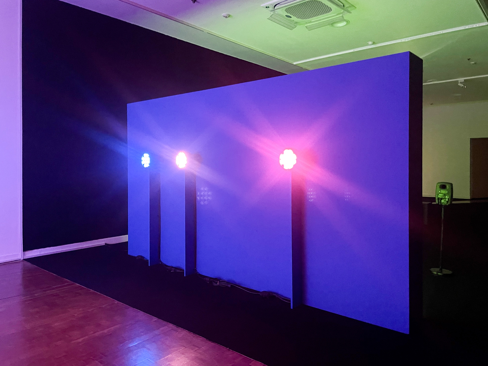
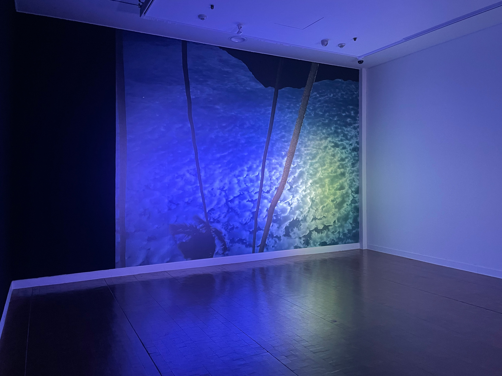
영상이 재생되는 스크린 너머에는 세 개의 조명이 설치되어 있었다. 조명 사이를 거닐다 보면 관객인 나의 몸이 조명과 겹치는 구간이 생겼고 그 순간 하나의 그림자가 벽면에 맺혔다. 외따로 떨어진 한 개의 조명과 몸이 겹칠 때 그림자는 하나이지만, 서로 붙어 있는 두 개의 조명과 몸이 겹칠 때 나의 그림자는 두 개인 것처럼도 느껴졌다.
나는 이 그림자가 개인이 짊어진 역사에 대한 은유라고 생각했다. 그렇다면 이 조명 설치물은, 케카히 와히의 영상에서 송출되는 하와이의 역사가 실은 이 전시를 보고 있는 당신의 역사이기도 하다는 점을 시각화하는 장치일 테다.
요컨대, 하와이는 한국의 은유일 수도 있고, 그 역 또한 같다.[3]
2. 수많은 이야기의 환상 교차로
이주요: 김성환이 하와이에 살아.
재훈: 네, 이 프로젝트 <표해록> 때문에 간 것 아닌가요?
이주요: 원래는 뉴욕에서 살다가 이주를 했어. 왔다 갔다 하긴 하는데, 하와이 주민이지.
재훈: 제13회 광주 비엔날레 커미션으로 제작하게 된 <머리는 머리의 부분>을 시작하면서 옮긴 것 아닌가요?
이주요: 아마 그쯤일 텐데, 정확한 시점은 모르겠어. 네가 맞을 수도 있지. <머리는 머리의 부분> 때문에 그 전에 1년을 보냈을 수도 있을 것 같아.
재훈: 이번 전시의 리플렛에 실린 서문을 보면, 프로젝트 초반에는 리서치를 위해 직접 차를 몰아 하와이에 방문하기 시작했고 2020년부터는 하와이로 기반을 옮겼다고 나와 있어요.
이주요: 처음에는 리서치를 위해 갔다가 하와이에 확 빠져든 거야. 그때부터 그냥 이주를 해서 살기로 한 거지.
재훈: 2022년에 열린 하와이 트리엔날레에서 사용된 프로필 사진을 보면, 정말 엄청 빠져드셨더라고요. 처음 봤을 때 김성환 작가가 아니라 하와이 사람인 줄 알았어요.
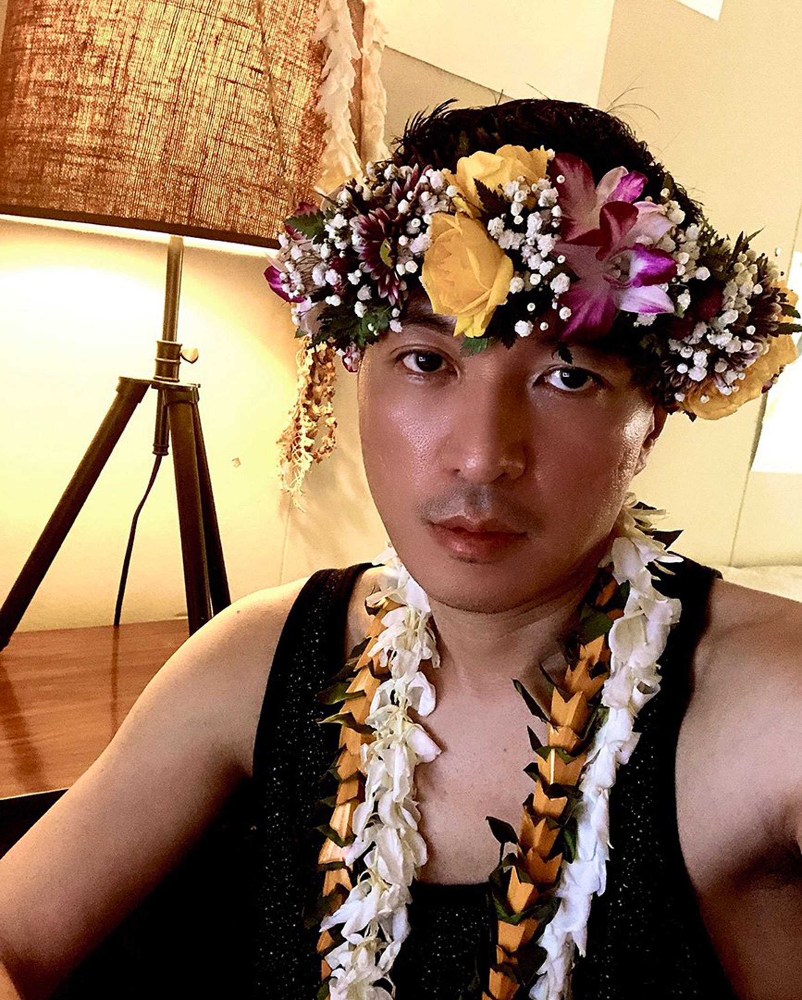
이주요: 기본적으로 작가들이 무언가에 깊이 빠지는 타입이긴 하지만, 김성환의 리서치는 오래된 거야. 항상 책을 읽고 영화를 보는데 그게 자기의 매개이기도 하고 생각을 일으키는 거울이기도 해. 그래서 한때는 하루에 영화를 세 편씩 매일 매일 보거나, 자기 공간에 친구들을 불러서 참여하게 하는 활동을 계속해 왔어.
나는 이번 전시를 오늘로 두 번째 보는 거야. 지난번에 왔을 때는 딱 Installation설치만 봤고 오늘 와서야 내용Text을 봤거든. 그러다 보니 오늘은 ‘아, 이게 내 개인의 문제이기도 하구나.’ 라는 생각이 조금 더 들었어. 왜냐하면 내가 김성환을 안 지도 이제 딱 20년이 조금 넘었거든. 그 친구가 작업을 해온 20년 동안 계속해서 교류를 해왔고 그 과정에서 같이 알게 된 사람들이 이번 전시에 대거 등장했더라? 그러다 보니 이 전시의 내용이 내 개인의 역사이기도 한 거야. 그래서 오늘 보고서는 마음이 많이 흔들리네.
전시를 봤던 첫날에는 굉장히 기뻤어. 아카이브 전시를 이런 식으로 present 할 수 있다는 게 너무 좋았고, 너무 스마트하잖아. 공간에 처음 들어갔을 때, 막 울퉁불퉁한 거야. 보통의 아카이브 전시처럼 공간과 작품을 평면적으로, 모노톤으로 조성해 놓은 게 아니라 공간에 대한 architectural한 개입을 통해 굴곡을 만들어 놓고 관객들에게 말을 걸고 있더라고.
서울시립미술관이 올드한 빌딩이고 전시하기에 어려운 공간이거든. 작가가 전시를 통해 일으키려고 하는 일에 시설물이 개입하지 않는 것이 중요하고, 그 공간감이 전시의 내용에 앞서지 않는 게 좋아. 근데 시립 전시장의 경우 천장에 여러 시설물이 언뜻언뜻 눈에 들어와. 그래서 설치 작업 할 때 방해가 되고 작품과 시너지가 일만 한 공간도 아니라고 생각했어. 근데 김성환 전을 보니 ‘이런 환경에서 이렇게 전시를 했다고?’ 싶어 깜짝 놀랐어.
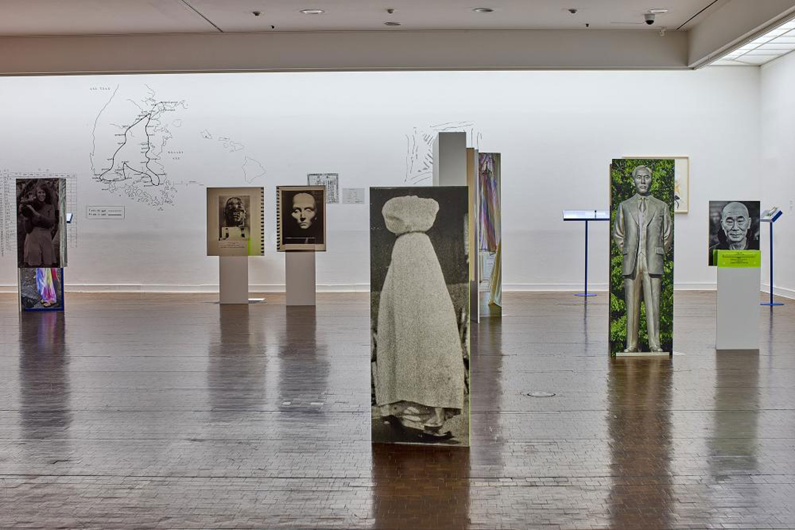 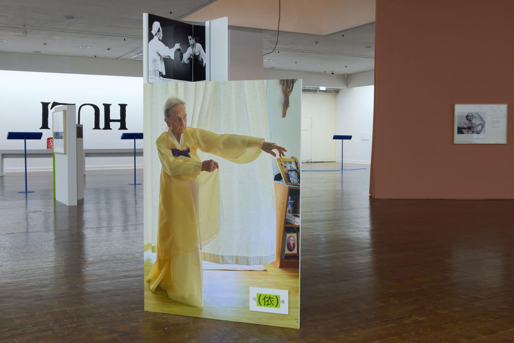 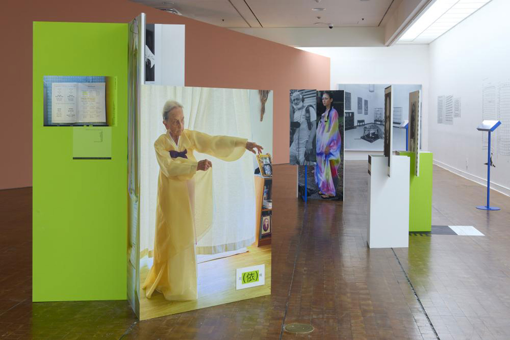 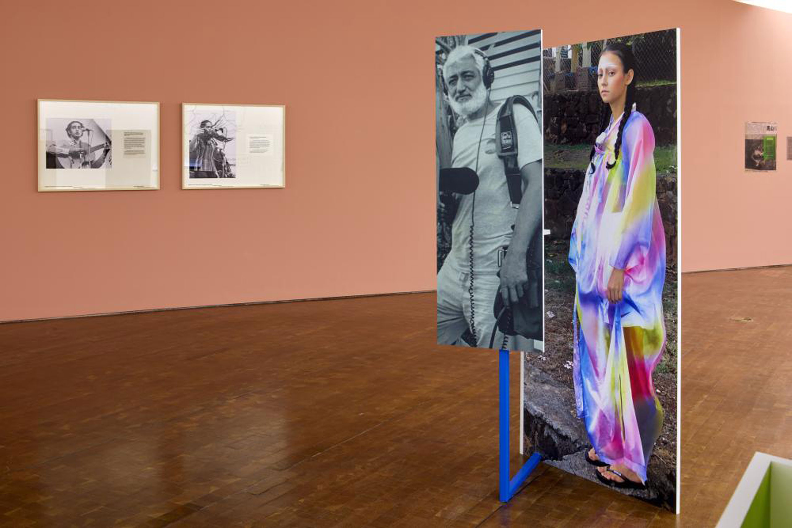
나는 그 전에 김성환이 네덜란드에 있는 반아베 미술관Van Abbemuseum에서 열었던 개인전 《Protected by roof and right-hand muscles》를 봤거든. 시기상 이번 전시는 그 전시와 독일에 있는 ZKM에서 하는 개인전 《Protected by roof and right-hand muscles》 사이에 있던 거야. 유럽의 미술관에는 작가의 구상을 공간 안에 물리적으로 구현해 줄 인하우스 테크니션이나 카펜터가 다 있단 말이야? 반면 시립은 그렇지 않지. 그렇게 ‘한국과 서울시립미술관이 갖고 있는 조건들을 토대로 어떤 전시를 할 것인가?’ 라는 기로에서, 아카이브 전시를 하기로 했다는 결정은 얼마나 스마트한가.
아까 네가 말했던 고속도로 건설 현장이 담긴 대형 사진 작품 <하누파아 할라와 이 카 포이푸 6.21.92 할라와> 있지. 너는 그 사진을, 네가 갖고 있던 근대화에 관한 생각과 엮어 봤잖아. 나는 거기서 제일 먼저 본 게 페이지 분할선이야.
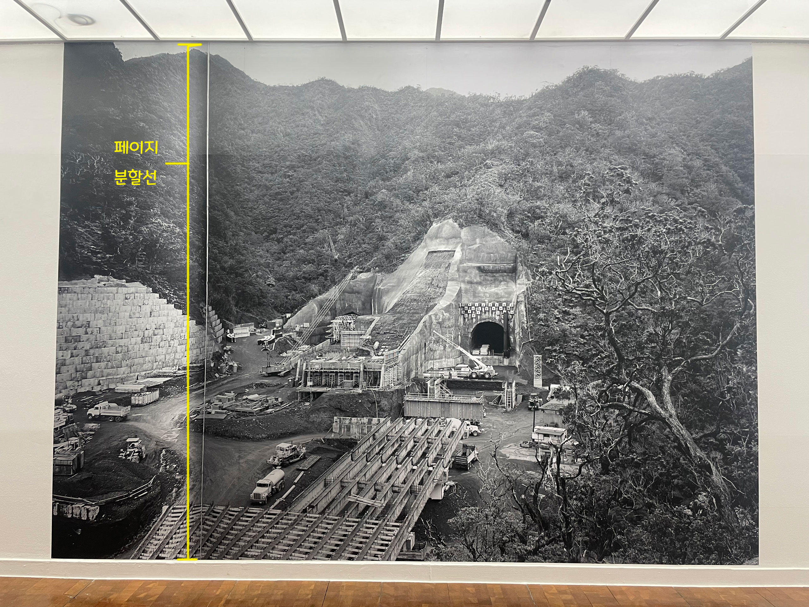
나는 그간 여타 아카이브 전시를 봐오며, 정보가 공간 안에서 어떻게 circulate 되느냐에 관해 많은 생각을 해왔어. 예를 들어, 왜 우리는 일상생활에서 앉은 채로 읽어도 되는 자료를 전시장에서 서서 읽어야 되는가? 아카이브 전시에 놓인 수많은 자료 중 관객은 어느 정도까지 Reading 해야 하는 것인가? 작가는 관객에게 무엇을 얼마나 요청할 수 있는가. 모든 아카이브 전시가 나에게 이런 생각을 하게 해. 그런데 이 전시는 그렇지 않았어.
《우아 아오 이아 오 이아 에 이아》 전시장에는 핸드폰으로 찍은 듯한 구도의 사진들이 수두룩하게 있잖아? 그건 전시를 보는 관객들에게 “이거 봐, 이거 한번 읽어 봐봐.” 하며 말을 거는 제스처야. 여기에는 핸드폰으로 사진을 툭 찍어서 친구에게 메신저로 전송할 때의 캐주얼함이 그대로 담겨 있지. 실제로 김성환은 자기가 오늘 읽은 책의 페이지 사진을 자기 지인들에게 보내거든. 이 전시의 전경을 보면서, 김성환이 나에게 이런 방식으로 정보를 공유하던 기억들이 떠올랐어. 자기가 이 이미지를 보며 떠올린 생각이나 이야기를 말해줬던 순간 그리고 나에게 의견을 물었던 순간. 그 일련의 Conversation대화가 전시장이라는 공간에 펼쳐져 있었지.
그래서 오늘 보니까 이 전시가 ‘아카이브 전시’라고 이름은 붙었지만 (왜냐하면 김성환이 “아카이브 전시를 하고 싶어, 할 거야.” 라고 말했거든) 실제로는 김성환 고유의 스토리텔링이더라고. 전시를 처음 봤을 때는 나름 객관적으로 봤지. 근데 오늘 보고서는 ‘내가 관객으로서, 객관적으로 전시를 보기가 되게 어렵구나.’라고 느꼈어.
재훈: 선생님 본인의 문제처럼 느껴져서요?
이주요: 내가 보고 있는 이 작품이 어디에서 어떻게 탄생했는지를 아니까. 이 영상에 등장하는 퍼포머는 어떤 사람이며, 목소리나 음악으로 출연하는 사람들이 누구인지 내가 다 아니까. 그들이 어디에서 만났고, 어떤 식의 관계성 속에 있었는지를 알고 있는데 그 사람들이 전시장 전반에 걸쳐 나오다 보니까, 결국은 ‘이게 내 이야기이기도 하구나’가 돼버린 거야. 한 번도 가보지 못한 하와이가 내 이야기가 돼버릴 줄이야.
김성환이랑 대화를 하다 보면, 내가 하나도 모르는 곳이 정말로 내 앞에 막 도래하는 느낌을 받아. 이야기하는 말벗으로서 엄청 재밌는 사람이야. 타고난 스토리텔러지. 아까 재훈이 네가 얘기했던 ‘그는 그에게서 배웠다 배웠다. 그에 의해 가르침을’ 그 주고받음이 계속 이루어지거든. 이야기가 오고 가는 매지컬한 플랫폼이 생기는 거지. 예를 들어, 김성환과 나의 대화에 김성환이 모르는 또 한 사람을 끼워 넣으면 또 다른 양상이 그려지거든. 서로가 서로에게 배우게 돼. 평소에 김성환이라는 사람과 알고 지내면서 그게 굉장히 신기한 부분이었거든? 근데 그 고유성이 ‘이번에는 공간에 녹아 있네?’ 라고 오늘 생각을 하였어.
하지민: 김성환 작가가 이야기하는 방식에 대해서 말씀하시니까 생각이 난 게 있어요. 저희가 선생님 만나기 전에 셋이서 지금까지 김성환에 대해 가지고 있던 생각을 자유롭게 나눴어요. 그 과정에서 나온 얘기 중에는 ‘그가 말하는 방식이 되게 특이하다.’ 도 있었거든요. 저는 리움에서 제작한 영상 인터뷰를 보며 그렇게 느꼈어요. “김성환이 소통하고 싶은 것은 무엇인가요?” 라는 질문에 대답하며 자기가 요즘 하고 있는 생각을 말한 후, 스튜디오 공간을 소개하는데요. 말하는 도중에 그 공간 안에 걸려 있는 그림을 가리키더니 이 그림이 언제 어떻게 이 방 안에 들어왔는지에 대해 말하기 시작하는 거예요.
이주요: 그걸 이 전시에서 하고 있잖아. (일동 웃음)
하지민: 심지어 갑자기 벽난로를 가리키더니 그 안에 든 불의 역사와 그것을 감각하는 사람들의 태도를 말하는데요. 같은 방식으로 다른 모든 사물을 시간적으로 대하며 그 이전을 상상하고, 그러한 본인의 접근에 엄청난 진지함을 갖고 임해요. 그의 이야기를 듣는 저는 영상 속 공간 안에 함께 있지도 않고 말해지는 상황을 겪고 있지 않은데도 불구하고, 그 시간을 생각한다는 것 자체가 흥미로워 홀린 듯이 듣게 되고요. 이야기를 다 듣고 났을 땐 ‘그래서 무슨 얘기를 했지?’ 라며 단번에 정리되지 않지만 듣는 그 순간에는 대상을 흥미롭게 여기도록 만드는 힘이 있다고 느꼈어요.
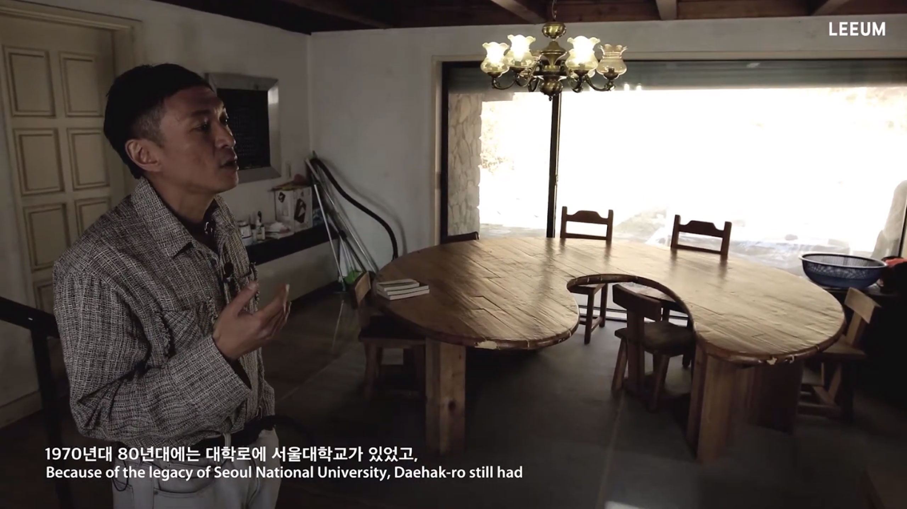
Link: https://youtu.be/6eTkWfC-f9Q?si=f3irQ8wVS8HF2S3e
김성환: 예를 들어, 이 책상도 저희 부모님이 예전에 대학로에서 운영했던 ‘오감도’라는 레스토랑에 있었어요. 대학로에 있던 레스토랑이었고 많은 사람들이 갔었죠. 1970년대 80년대에는 대학로에 서울대학교가 있었고, 많이 활성화되어 있었어요. 그리고 80년대에는 데모가 많이 일어났었죠.
‘오감도’는 양식집이었기 때문에 학생들이 연애와 데이트를 하던 공간이자 데모를 하다가 경찰을 피해서 숨어있던 장소였어요. 이 테이블은 그 공간에 있었던 것이고요. 레스토랑이 없어진 다음 이 테이블이 집 밖에서 썩어가고 있을 때 영상 작업
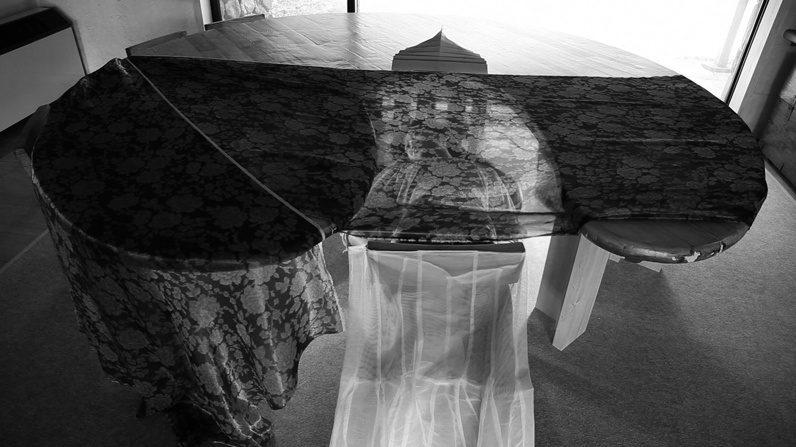
하지민: 또 아까 말씀하신, 핸드폰으로 찍어서 보낸 사진의 포맷은 (제가 그에게 문자를 받아본 적이 없기 때문에) 사적이라고 느끼진 않았는데 캐주얼하다는 느낌은 확실히 있었어요. 만약에 이 내용을 다른 작가가 아카이브 전시로 보여줬다면 여타 미술 전시에서 으레 하는 방식처럼 아예 그 책의 페이지를 스캔하거나 벽면에 라벨링을 할 것 같거든요. Room 1, 2, 3에 들어가기 전 벽면에 부착되어 있었던 전시 소개 글처럼 더 읽기 쉽고 정갈한 방식으로요.
저도 아카이브 전시가, 작가의 태도보다도 아카이브 자료의 내용이 더 큰 존재감을 띠는 장르라고 생각해 왔어요. 그래서 ‘결국 이 작가는 이 내용에 관해 어떻게 생각하는가?’를 읽기 어려워하곤 했었는데, Room 1에서는 김성환의 방법론이 형식적으로 돋보여서 신기했어요.
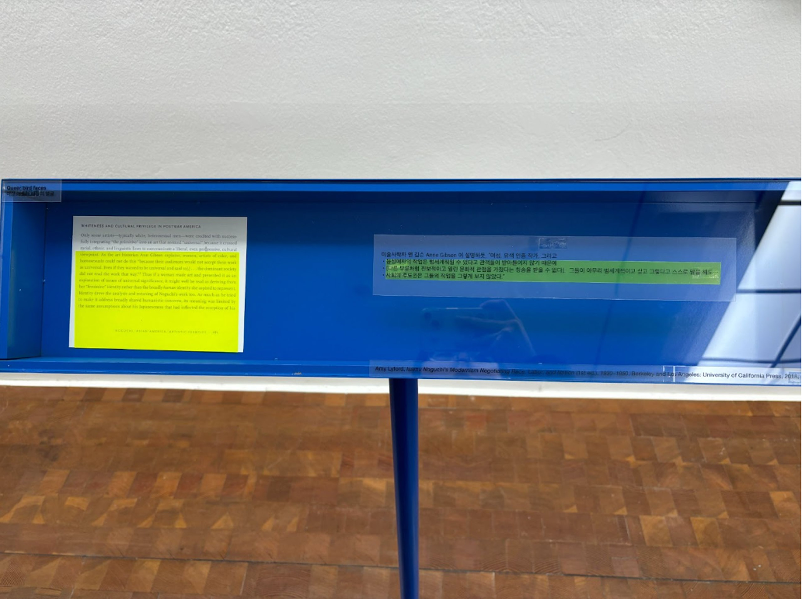
핸드폰으로 찍은 책 사진을 보여주는 방식 역시 인쇄본을 그저 벽면에 붙여두는 식뿐만이 아니었죠. 고개를 아래로 숙였을 때 볼 수 있을 정도의 키를 가진 파란색 안내판 안에 사진을 넣어두고, 그 페이지에 적힌 내용을 영한 혹은 한영 번역한 뒤 자신이 중요하게 생각하는 구절에 (형광펜으로 밑줄을 긋듯이) 강조하여 제시했어요. 문서에서 자료의 출처를 표기할 때처럼, 각주까지 포함해서요.
원문서인 책의 정보와 그 책을 읽다가 관심 두고 촬영한 페이지, 번역을 통해 달라지는 문장들의 뉘앙스 그리고 색깔 표시로 분별 되는 정보의 중요성. 이런 레이어들이 모두 살아 있는 채로 보였어요.
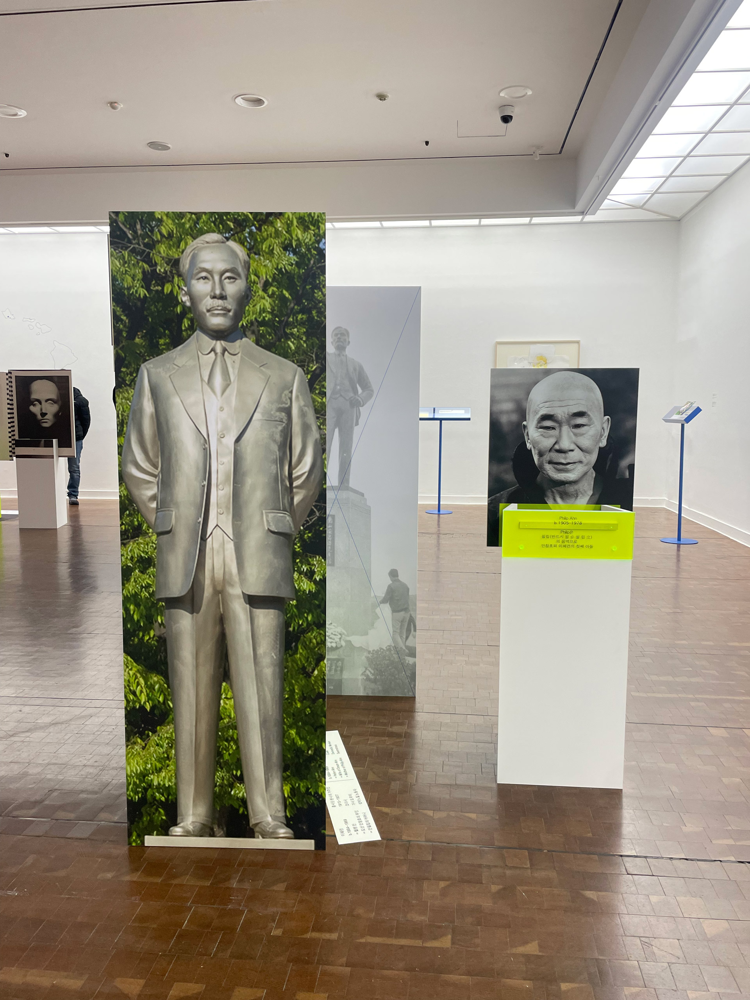
—이승택 작, 안창호 동상, 서울, 신사동, 도산공원, 2015. 사진 제공: 대한민국역사박물관 근현대사아카이브 (사진: 작가 미상) (왼)
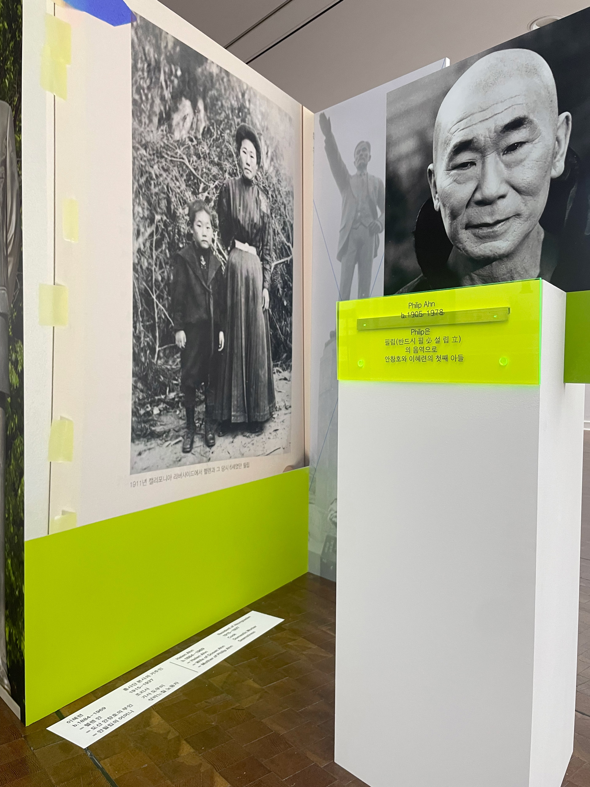
—김경승 작, 안창호 동상, x표 된 사진, 서울, 신사동, 도산공원, 1973. 사진 제공: 경향신문사 (사진: 박용수) (오)
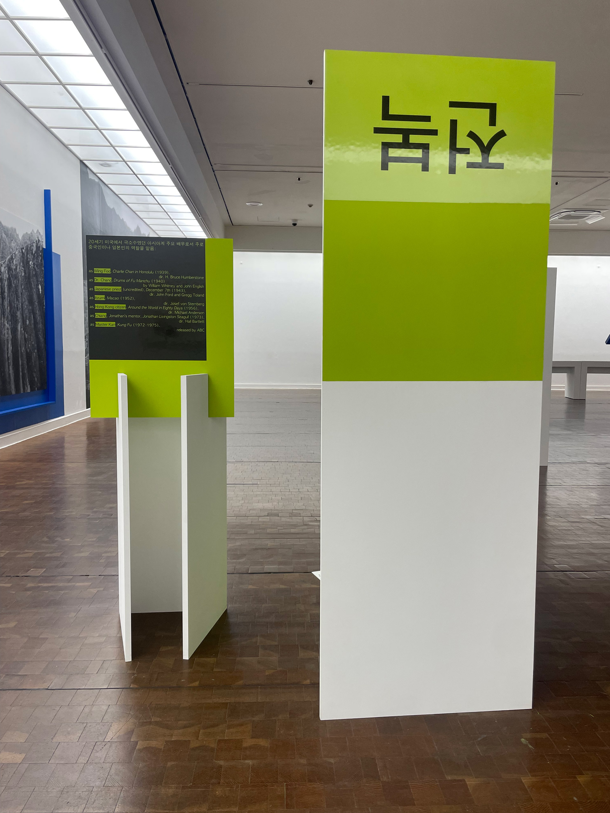 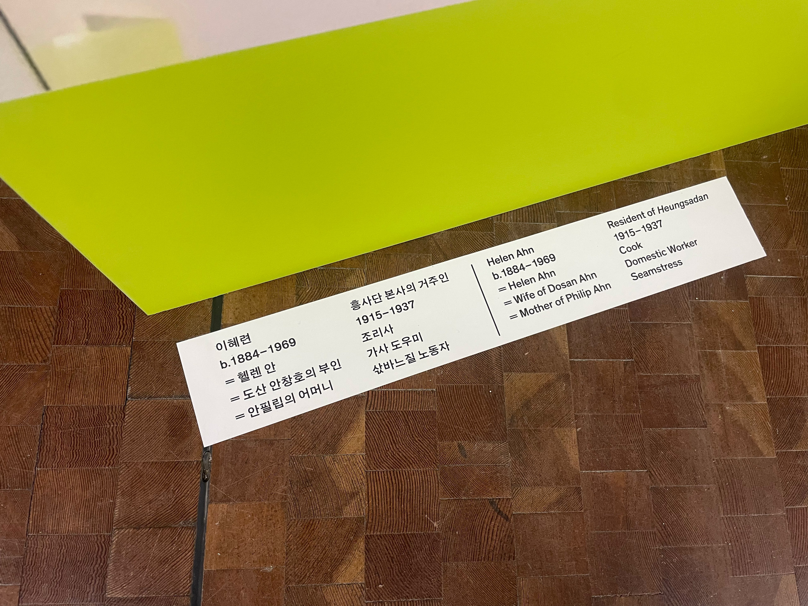
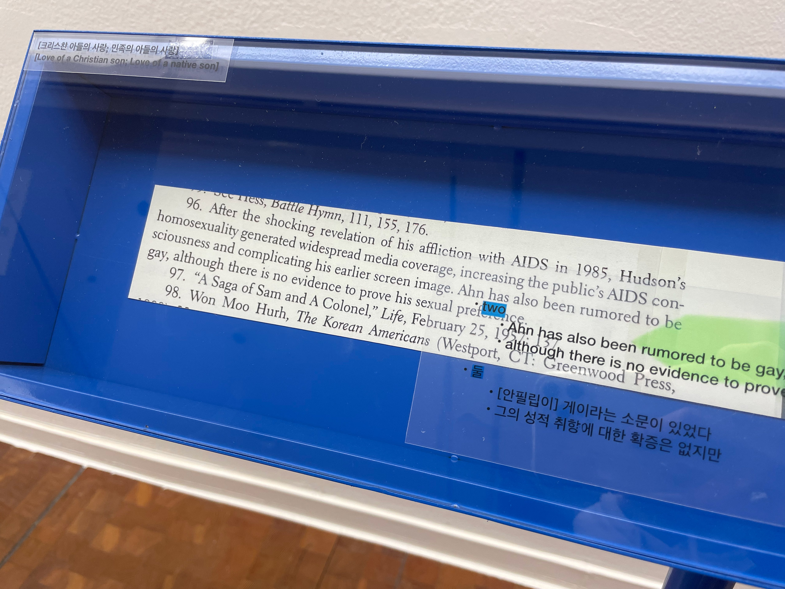
인물 사진을 실제 사람의 크기만큼 키워 등신대처럼 만들어 놓은 <몸 컴플렉스> 시리즈도 특징적이었어요. 하와이와 관련된 인물들의 정보를 다면적으로, 다층적으로 그리고 몸을 움직이면서 볼 수 있도록 제시한 작품이었죠. 특정 대상이나 주제에 관한 정보를 전달한다는 측면에서 Room 1에 아카이브 전시의 특성이 녹아있다는 사실이 납득되는 동시에, 작가의 형식적인 면모 역시 강하게 느낄 수 있던 경험이었네요.
3. 정보의 증기 사이로 트이는 자유로운 발길들
이주요: ‘아카이브 전시’ 그리고 ‘아티스트 리서치’가 미술계에서 주목을 받고, 유행하기 시작한 지도 상당한 시간이 흘렀지. 사실 ‘아티스트 리서치’가 학교라는 곳에서 많이 사용될 수밖에 없는 기법이야. 왜냐하면 (동시대의) 아티스트는 지식의 생산자니까. 그 이전 시대의 아티스트는 감각적이고, 끼가 있고…
재훈: 천재
이주요: 천재이기도 한, 그 재능이 부각되는 존재였다면 지금은 굉장히
재훈: 연구자
이주요: 연구자로서, 어떤 지식을 생산하는 자로서 부각되기 시작했어. 그러면서 그 시대적 흐름에 따라 일군의 작가들이 ‘나 이거 공부했어요.’ 혹은 ’ 나 이거 읽었어요.’ 하고서 자기 관심사를 그저 진열하는 방식으로 전시를 만들기 시작한 거지.
하지민: 맞아요.
이주요: 미술 작가들이 자신의 관심사를 문서의 형태로 전시장에 갖고 나오는 것에 대하여 나는 이런 생각을 하곤 해. “관객이 왜 ‘전시에서’ 너의 관심사에 관해 열심히 ‘읽어야’ 해? 네가 진정 미술 작가라면 이것보다 훨씬 더 강력한 언어가 있어야 하지 않아?”
어떤 텍스트나 말, 이미 발명된 Vocabulary로 설명될 수 있는 것만 전시장에 등장할 수밖에 없게, 또는 논리가 맞거나 논지가 다 귀결돼야만 전시장에 등장할 수밖에 없게끔 유도하는 엄숙하고 답답한 상태가 계속되고 있지. 그리고 그런 작가들이 제시하는 Knowledge는 전시장에서 (일어날 수 있는) 다른 이들과의 교류를 전제로 하고 있지 않아. 그것보다는 ‘나 이렇게 했어.’ 하고 자신의 Knowledge를 자랑하거나 ‘너네 이런 거 몰랐지?’라며 자신이 발굴한 기이함을 제시하는 일에 방점이 찍혀있지. 거기로부터 조금도 앞으로 나가지 못하는 장면을 여타 아카이브 전시에서 너무 많이 봤거든.
반면에, 《Ua a‘o ‘ia ‘o ia e ia 우아 아오 이아 오 이아 에 이아》는 관객들에게 Knowledge와의 매칭을 요청하지 않아. 내가 하와이의 역사에 관해 알고 있든 모르고 있든, 그 사실은 이 전시를 감상하는 데 큰 지장이 되지 않지. 이 점은 김성환이라는 개인이 갖고 있는 Generosity너그러움과 상관이 있어.
김성환은 자기가 읽은 책이나 알고 있는 사실을 굉장히 generous하게 share하는 사람이야. 앞서 언급한 케이스처럼, 지식을 자랑하기 위해서가 아니라 ‘오늘 내가 이 부분을 읽었는데 너도 한번 볼래? 너는 이것에 대해 어떻게 생각해?’ 이런 마인드거든. 그러니까 ‘이것은 나만 알 수 있는 것이다’ 라는 Authorship저자성을 주장하지 않는 것이지. 아카이브를 다루는 이들 사이의 쟁점 중 하나가 바로 이 Authorship에 대한 문제잖아.
수많은 아티스트가 아카이브 전시를 하며 그것이 ‘자기 이야기임’을 표방했을 거야. 자기가 직접 발로 뛰었거나, 누군가를 실제로 만났거나, 오랫동안 쏟아부은 자신의 관심을 전시에 가져다가 펼치고 싶었기 때문에 아카이브 전시를 선택했을 테지. 그런데 이 전시는 번역의 장소이자 고정 좌표로서 하와이를 지정하며 인쇄물이나 영화, 미술 전시 등에서 자기 생각을 일으키는 여러 트리거를 발췌하여 가져다 놓고 그 끝을 풀어놓았더라. 김성환의 머릿속이 꼭 그럴 것 같듯이.
작가가 긴 시간에 걸쳐 추적해 온 좌표들이 혼란스럽긴 하지만 어렵지 않게, 길을 잃기도 쉽지만 흥미를 갖게끔 하는 방식으로 전시장에 펼쳐져 있었지? 관객은 그 안을 거닐며 기존에 자신이 알고 있던 무언가와 작가의 좌표가 어느 순간 매칭이 되기도 하고 헤어지기도 하는 Journey여정을 만들어가는 거야. 그 점이 좋았어. ‘전시장이 아니면 이 Knowledge를 우리가 어떻게 나누어 받을 수 있었을까?’ 라고 생각했어.

Link: https://sunghwankim.org/study/lessonsinthefall.html
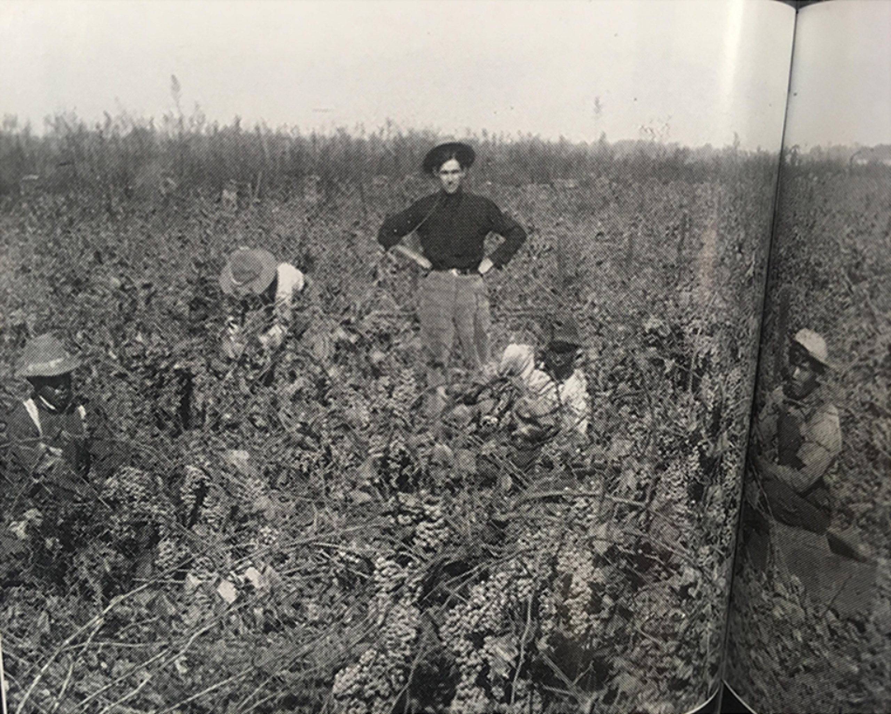
사진: 김성환
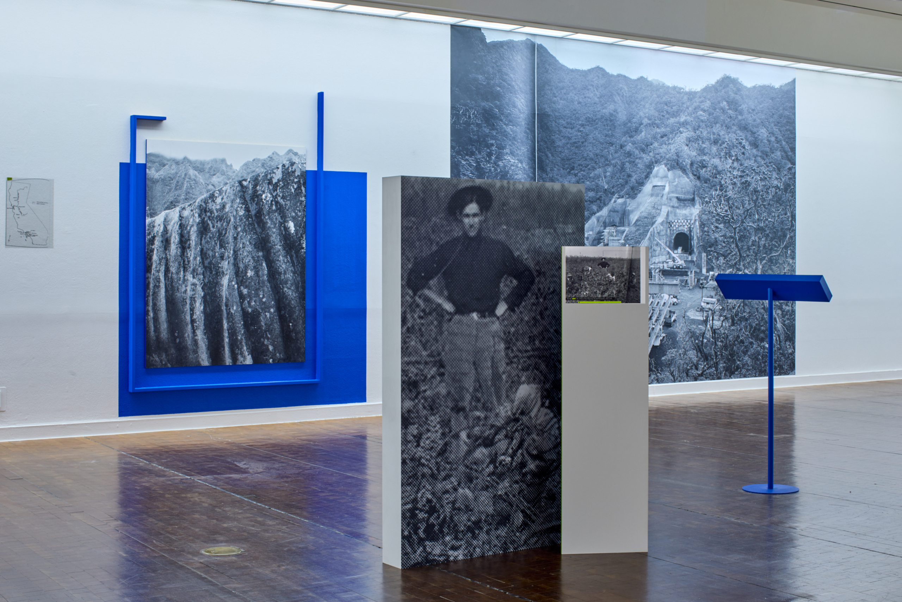
사진 제공: 작가, 서울시립미술관. 촬영: 권수인
그리고 또 하나 말하고 싶은 점. 나는 김성환이 지금껏 해왔던 전시를 많이 봤지만, 그 어떤 전시도 이번 전시만큼 ‘This is what I know.’라는 자신감이 더 확고하진 않았어. 왜냐하면 그에게 있어 리서치와 독서는, 아티스트로서가 아니라 한 명의 사람으로서, 아주 오래된 삶의 일부거든. <표해록>에서는 그 라이브러리와 자신의 삶 속에 쭉 있었던 특정한 두 가지: 하와이와 한국을 선택한 거야. 두 국가의 역사는 한국에서 태어난 이 친구가 미국에서 오랫동안 거주하며, 자기 자신을 설명하기 위해, 계속해서 들여다보고 revisit 할 수밖에 없는 주제거든.
또 한편, 하와이는 여러 인종의 국민이 모여 서로서로 번역하는 공간이잖아. 이 ‘번역의 문제’를 파란색 안내판 속에서 발췌, 병치, 재구성 등의 방법으로 레이어로써 다루고 있는 것이고. 같은 자료를 영어로 읽을 때랑 한국어 번역본으로 읽을 때 굉장히 다르더라. 이것이기도 하고 저것이기도 한, 이걸 읽었을 때는 저걸 놓치고, 저걸 읽었을 때는 이걸 놓치게 되는 순간이 계속해서 일어나지.
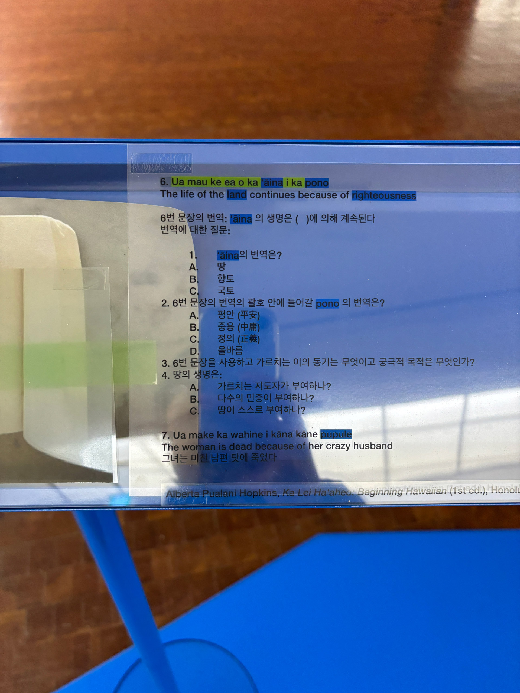
전시를 계속 보다 보면 알 거야. 영어와 한국어 사이의 간극도, 정반합과 같은 이성적 논리도 작가의 조형 행위를 통해 결국 무화無化되지. ‘아카이브 = 정보’라는 관성적인 등식이 배반되며 어느 순간부터는 아카이브가 정보가 아닌 강력한 이야기로 보이기 시작해. 실제로 Room 1에 있던 자료를 모두 숙지해야만 Room 2나 Room 3를 감상할 수 있던 것도 아니었잖아?
이 전시 자체가 하나의 통합적인 정보라면, 나는 그 정보가 evaporate증발한 것 같아. 전시의 내용이 단일한 텍스트에 사로잡혀 있거나, 지식의 전달 방법이 텍스트에만 의존하고 있지 않지. 텍스트가 표현할 수 있는 만큼만 전달해 왔던 그 이전의 사례들과는 달라. 정보들이 영어나 한국어, 하와이어와 같은 언어라는 몸에 갇혀 있지만 그 끝이 이상하게도 올이 풀려서 evaporate 되는 거지. 공중에 떠다니는 거야. 그 속에서 시간을 보내다 보면 ‘결국은 네가 나한테 이 얘기를 해 주고 싶었구나’ 같은 감각을 느끼게 돼. 그러니까 그 순간순간을 따라가다 보면, 이 전시에 어느 정도까지 참여한 거야.
그리고 김성환이라는 작가를 연구하거나 앞으로 그의 작품을 보려는 사람에게 이 전시는 너무나 중요한 자료야. ‘나는 이런 책을 읽고, 이런 자료를 보며, 이렇게 공부를 해’ 같은 작가의 배경 정보를 이렇게까지 날 것으로 쫙 퍼준 경우가 있나 싶을 정도로, 김성환이란 작가를 알기 위해 핵심이 될 전시이기도 해.
조현진: 제가 봐왔던 아카이브 전시에는, 하나의 큰 주제가 있고 그를 은유하는 자료나 작품들이 전시장에 놓여 그 주제를 채우고 있었어요. 은유라는 개념에서 보조 관념이 원관념에 붙어 원관념을 충실하게 만들어주는 것처럼요. 반면 이 전시에서는 은유에서 발생하는 관념 사이의 위계가 보이지 않았어요.
그리고 Room 1에서 제일 기억에 남았던 문장 중 하나인, ‘우리 모두가 한국 무용이나 한국의 뭘 아는건 아니었지만, 우리에게 한복이 있었기에 춤을 추었다.’
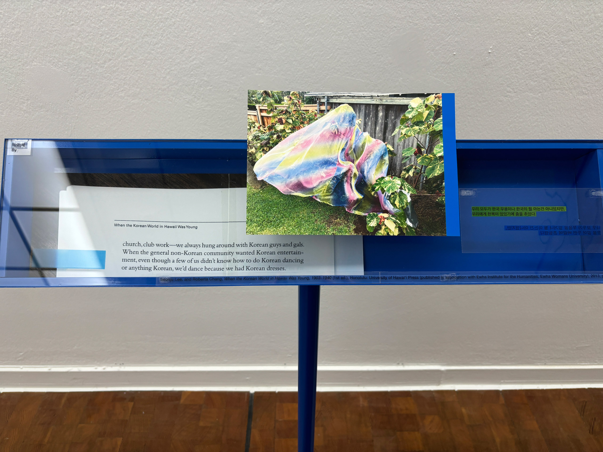
그리고 그 아래 뒤집힌 채로 있던 문장 ‘나무 모두가 무용을 알거나 뭘 아는건 아니었지만 옷을 걸어 두면 바람에 흔들렸다.’ 이 전시를 보는 과정 자체도 정말 이 문구처럼 느껴졌어요.
이주요: 맞아.
조현진: 그리고 Room 2의 출구 쪽에서 전시장 안쪽을 바라보면 여러 편의 영상을 한눈에 볼 수 있었는데요. (전시 설명에서도 명시되었듯) 영상과, 영상이 공간에 놓이는 방식이 하이쿠의 문법과 정말 유사하다고 느꼈어요.
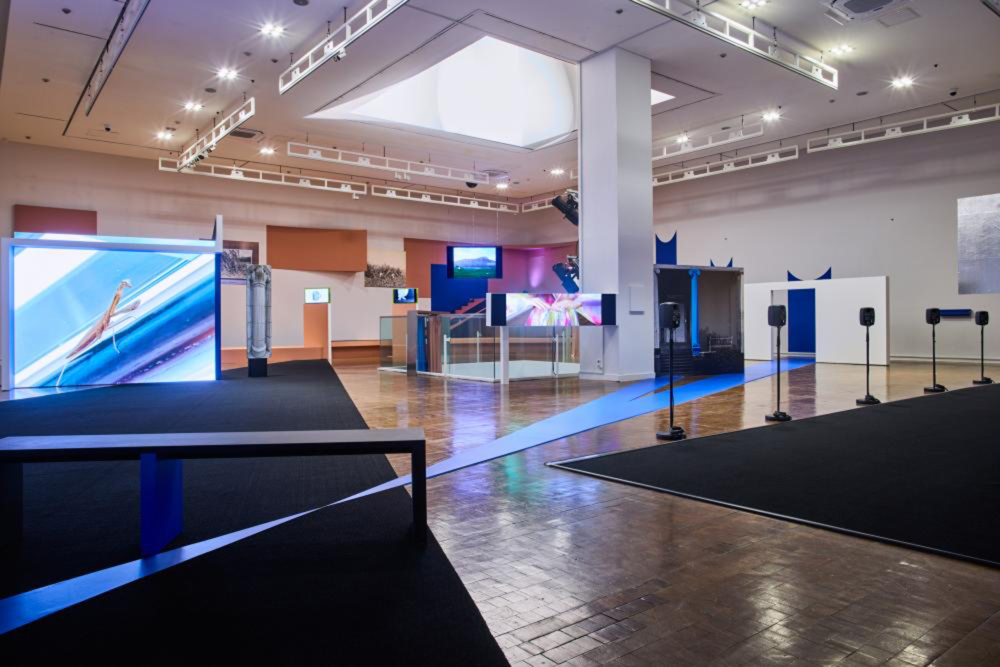
글: 박가희
Room 3에 있는 <게이조의 여름 나날>을 보면 카메라가 인물을 트래킹하거나, 패닝을 통해 다른 공간을 비추기도 하는데요. 두 번째 방에 있는 영상들에는 그런 방식이 사용되지 않았던 것 같아요. 패닝과 트레킹을 한다는 것 자체가 ‘너는 이쪽으로 걸어간 다음에 저기를 봐, 내가 이 방향으로 움직일 테니 너는 날 따라와.’ 이런 연출이 있었다는 증거잖아요. 이에 반해 Room 2에는 상대적으로 정적인 영상들이 놓여있었고, 그 패닝과 트래킹의 궤적을 제가 만들 수 있어 자유롭다고 느꼈어요. 그리고 그 안에서 제가 스스로 어떤 해석을 하면서 궤적을 만들어갔을 때 감동이 왔었고요.
예를 들어, <김천흥의 발움직임> 영상이 있는 판넬 뒤로 가면 그 안무를 가르쳐 주는 내용의 대사가 붙어있는데요. (‘한 박자 발 보 이건 위로 가는 거예요. / 앞으로 갔다 뒤로 물러나는 거예요.’) 그 대사 위로는 노동 현장처럼 보이는, 올리브 나무숲 사진이 있었고 그 맞은 편에는 조선인 노동자들의 모습이 담긴 기록 사진이 있었어요. 이 세 가지 요소를 보면서 올리브 나무숲 사진 안의 노동자들이 움직이는 궤적을 상상하기도 하고.
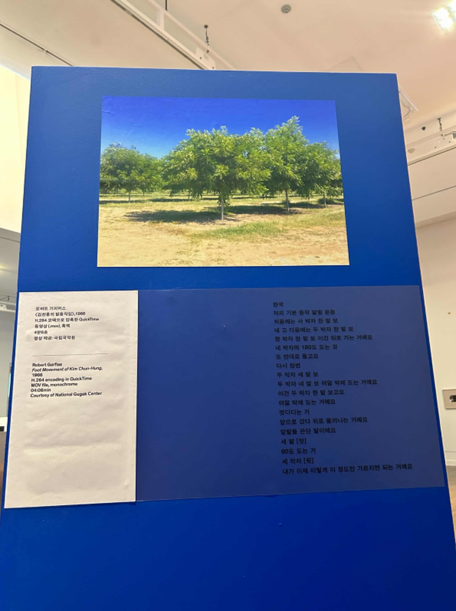
그곳으로부터 걸어 내려온 후 공간의 한가운데로 가 네모난 통로에 고개를 넣어보기도 했어요. 그 통로는 Room 1과 이어져 있었고, 저는 거기서 구체 시 <훌리>와 (작가가 ‘HULI’와 같은 문법으로 뒤집어 놓은 글자) ‘민중’을 보았거든요. 저는 Room 2를 맨 마지막에 봤는데요. 전시를 전체적으로 다 보고 난 후 창문 같은 통로를 통해 아래층을 내려다봤을 때, 뒤집혀 있던 글자 ‘민중’이 또 한 번 뒤집힘으로써 바로 보였어요.
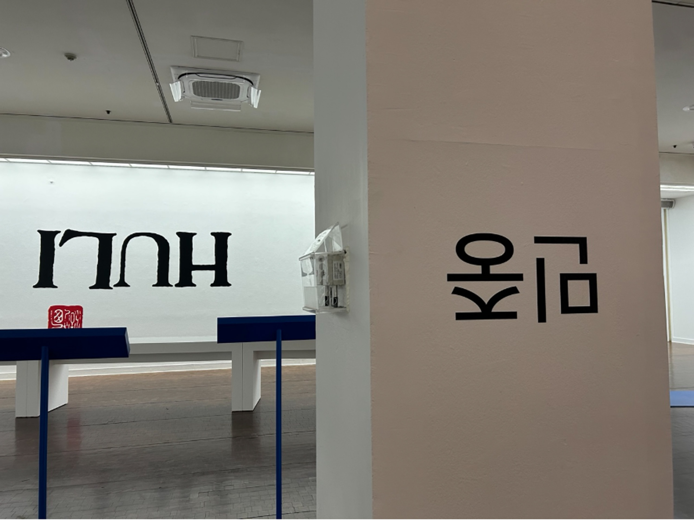
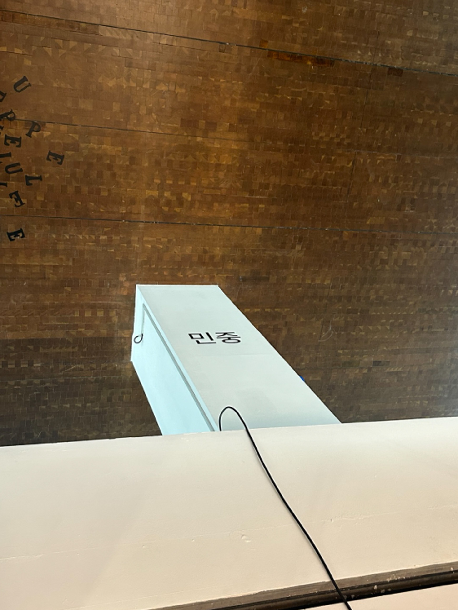
이런 순간들과 같은 자유를 만들어 준 것 같아, 그때 자그마한 감동을 느낄 수 있었어요.
4. Idiosyncratic한 기록물로 이루어진 유예의 공간
이주요: ‘Idiosyncrasy’에 대해 생각을 하게 되네. <게이조의 여름 나날>을 오랜만에 다시 봤는데 오늘은 김성환이 숲으로 걸어가는 장면이 눈에 띄더라. 김성환 특유의 뒷모습이 있거든. 뒷모습만 딱 봐도 ‘김성환이네?’ 하는 그런 거. 같은 영상에 나오는 네덜란드 친구 Mieke Van de Voort를 보면서도 비슷했어. 그 친구가 걸어가는 모습, 앉아 있는 모습에서 ‘그 사람이네?’ 같은 것들이 느껴졌거든. Room 3에 들어가면 바로 보이는 영상 <방화>에서 깡통에다 불 넣고 돌리는 사람 있잖아. 그 친구를 보면서도 ‘그 사람이네?’ 싶었고. 이런 순간을 전시 전반에서 경험할 수 있었어.
만약 이 정보들을 하나의 기록물이라고 볼 수 있다면, 이 기록물은 되게 idiosyncratic한 기록물인 거지.
하지민: 이건 좀 딴 얘기지만, 저 쥐불놀이 돌리는 그 영상이 너무 좋아요.
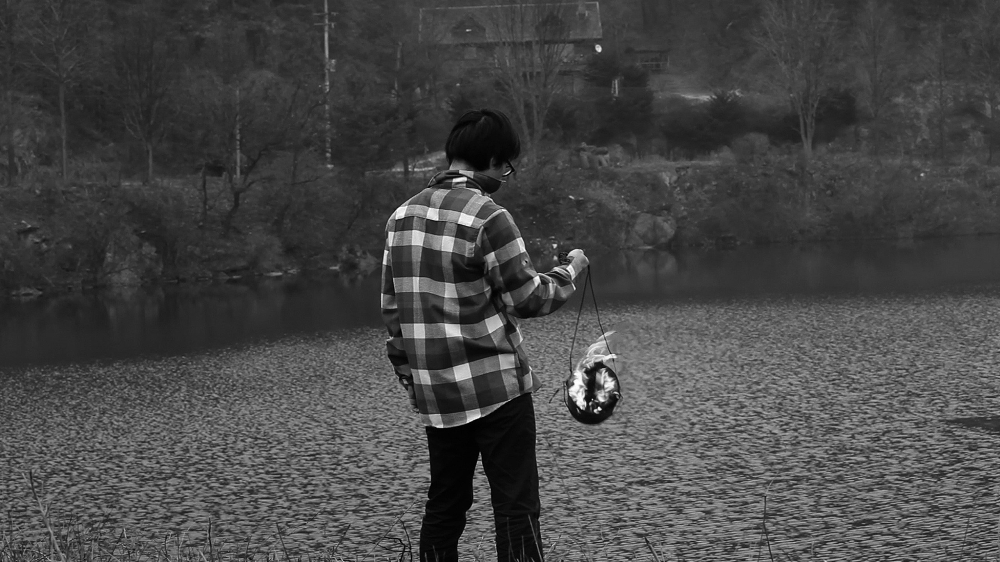
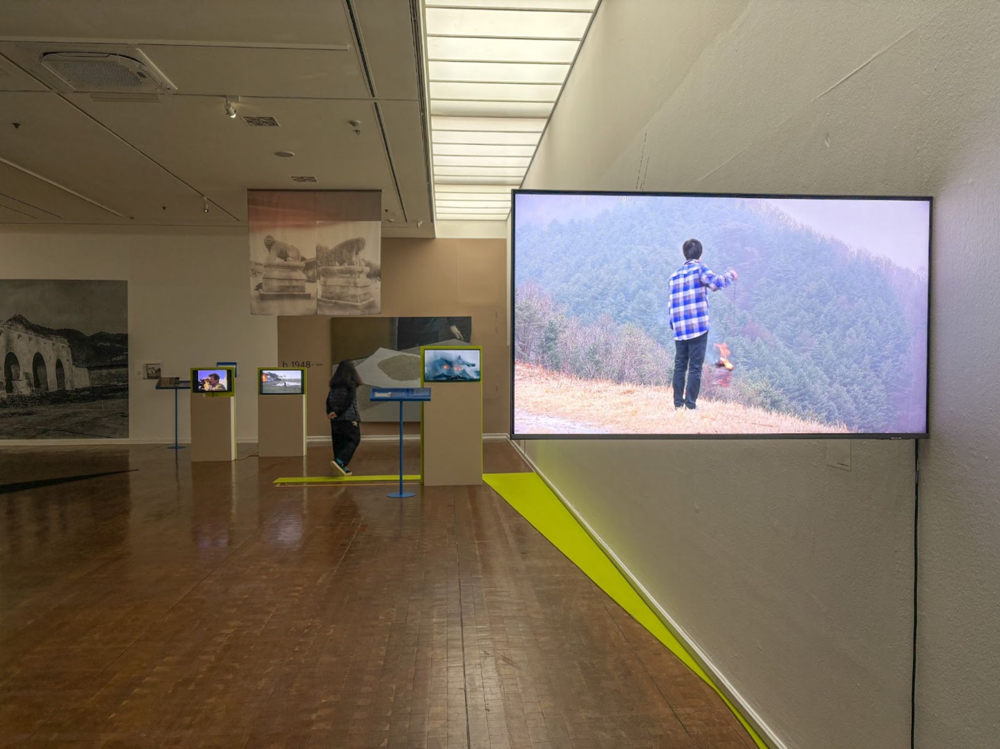
이주요: 맞아, 진짜. (웃음)
하지민: 그게 <템퍼 클레이> 영상에서도 잠깐 나왔던 것 같은데, 푸른 흑백화면이었어요. 제가 쥐불놀이를 본 경험이 거의 없어서 그런지 체크 셔츠 입은 남자한테 자꾸 시선이 가더라고요. Room 3에는 숭례문 방화 사건을 중심으로 그 성이 불타는 장면에 대한 영화들이 나오면서, ‘방화’를 사건의 중요한 축으로 배치해 뒀잖아요. 그런데 제가 알던, 작가의 전작에 등장하는 쥐불놀이 장면이 방의 초입에 놓였을 때 그 이유는 알겠지만 ‘이 쥐불놀이랑 다른 방화 장면들은 너무 다른 이야기인데…?’ 하면서도 그것들을 또 같이 두려고 했다는 선택에 대해 생각하게 됐어요.
조현진: 그냥 그런 게 불안불안해.
하지민: 이제 잘못 던지면… 산불.
조현진: 그래도 물 앞에서 하니까 괜찮아.
재훈: 숭례문 방화 사건의 원인이 뭐였죠?
이주요: 어떤 미친 사람이 기름을 끼얹고 방화했었지. <게이조의 여름 나날> 찍고 얼마 안 있어 벌어진 일이야. 너무 놀랍게도 정말 짧은 시간 안에 사라지게 된 거지.
조현진: 어렸을 때 TV 보다가 갑자기 그 뉴스가 긴급 속보로 올라왔던 게 기억나요.
하지민: 그래서 <게이조의 여름 나날>에서 사라진 요소 중에 첫 번째가 숭례문이고 두 번째 요소가 등장인물 Mieke Van de Voort잖아요. 이제는 사라진 것들을 회고하면서 뭔가 제사를 치르는 것 같기도 했어요, 이 전시에서.
재훈: Mieke Van de Voort가 세상에서 없어진 해인 2011년에 김성환이 ‘Ki-Da Rilke’라는 제목의 책을 발표했는데, 이번 전시에서 배부된 소책자 『레슨북-Room 3』의 배경에 『Ki-Da Rilke』에 포함된 드로잉이 삽입돼 있다고도 하더라고요. Mieke Van de Voort라는 사람에 대해서 제가 아는 바는 없지만, 작가가 그녀를 만나고 대화하며 생각하고 느낀 흔적들이 이번 전시가 다룬 ‘번역’의 문제와 함께 전시 전반에 옅게 흐를 수도 있겠다는 생각이 드네요.
이주요: (idiosyncrasy에 대한 설명으로) strange or unusual habit, ways of behaving, peculiar character.
김성환의 배경에는 특유의 세계관이 형성될 수밖에 없던, 특이한 삶의 궤적이 있어. 이민자로서, 한국에서 미국, 미국에서 유럽, 유럽에서도 다시 하와이로 간 거거든. 근데 하와이에 갔더니 하와이가 갖고 있는 어떤 조건이 한국의 조건과 다시 연결되는 경험을 계속해서 하는 거야. 하와이에 실제로 한국 이민자도 많거든.
김성환은 하와이를 번역의 공간으로서 이렇게 느낀 것이 아닌가 싶어. 자신이 어디 출신이거나, 무엇을 알고 있거나, 무엇을 하러 왔거나와 같은 모든 단단한 것이 약간씩 유예되는 그런 공간. 그렇다 보니 기다리고, 이야기를 듣고, 돌아다녀도 보고, 내가 못 본 게 있나도 보는 등 여러 가지가 조심스러워지는 거지. 이 전시도 마찬가지였어. 이 전시에서도 작가가 나를 가르치려 하거나, 무언가를 주장하거나, ‘이걸 꼭 알아야 돼!’ 라고 강조하는 그런 감각은 없었어.
하지민: 아까 전시를 이루는 정보들이, 정보가 아니라 이야기로 느껴졌다고 말씀하셨잖아요. 그 감각이 저도 앞으로도 더 생각해 보고 싶은 말인 것 같아요. 제가 느끼기에 외부의 정보가 제게 정보에서 이야기로 확 전환될 때는 제가 그 내용에 올라탔을 때, 내가 이것을 같이 겪지는 않아도 그 안에 들어가게 됐을 때 비로소 그것이 내가 소화해야 할 정보인 게 아니라, 당연하게 내 안으로 들어오는 이야기처럼 바뀌는 것 같아요. 그래서 저도 이 ‘아카이브 전시’가 정보 공격처럼 느껴지지 않았던…
이주요: 정보 공격 (웃음)
조현진: 너무 공감이야. 정보 공격처럼 느껴진다는 거.
이주요: 너네도 공격이라고 느끼는구나? 나만 읽기 싫어해서 그런 줄 알았어.
하지민: 공격처럼 느껴지는 경우는, 제가 딱 한 줄만 놓치고 다음 문장으로 가도 전혀 이해할 수 없는 경우예요. 정보가 아주 빡세게 나열되어 있는…
이주요: 그렇지, 공부를 시켜.
하지민: ‘내가 이걸 알아야 그다음으로 이제 넘어갈 수 있겠지’ 하면서 열심히 읽게 되는 경우가 정보로 다가올 때인 것 같아요. 김성환 작가가 발췌한, 가져오고자 한 이야기들이 사실 왜 이 이야기와 이 이야기를 같이 두는 건지 정확하게, 정합적으로 딱 머릿속에 정리되지 않잖아요. 아까 현진이 언급했던 그 문장처럼요. (‘우리 모두가 한국 무용이나 한국의 뭘 아는건 아니었지만, 우리에게 한복이 있었기에 춤을 추었다.’ / ‘나무 모두가 무용을 알거나 뭘 아는건 아니었지만, 옷을 걸어두면 바람에 흔들렸다.’)
저는 그 문장도 그렇지만, ‘클렁씨가 바로 정씨다.’ 라는 문장을 보고도 유사한 이상함을 느꼈어요. 어떤 기사에 ‘Chung’이라는 성을 쓰는 사람의 철자가 잘못 기록돼서…
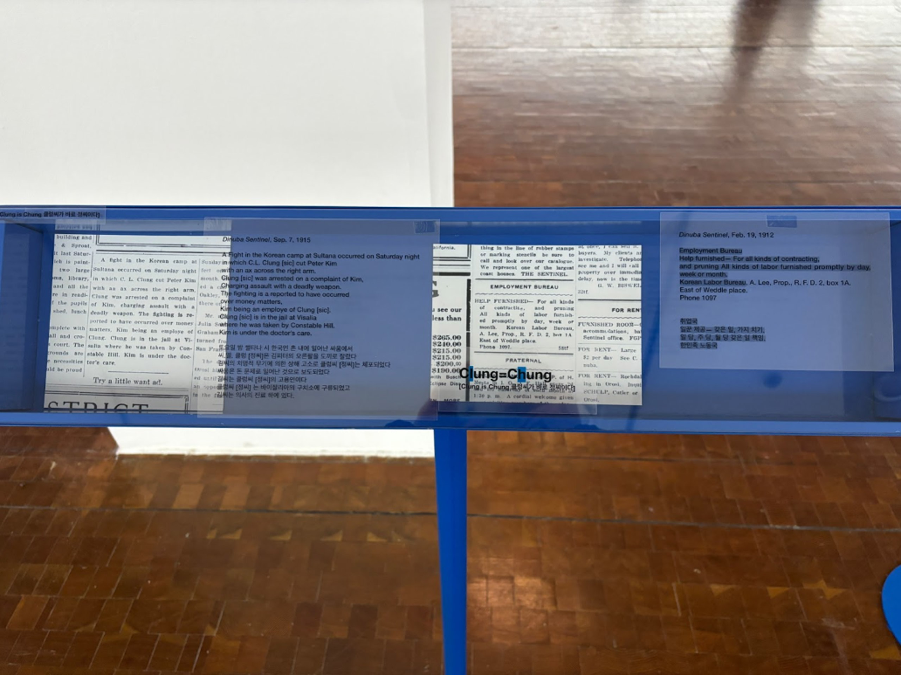
조현진: h가 l로 기록이 되면서 ‘정Chung’씨가 ‘클렁Clung’씨가 되었다. 하지민: 어떤 피고용자가 모종의 사건으로 인해 자기 고용자의 팔을 잘라서 지금 법적 상황에 놓인 상태다. 근데 그 사람의 이름이 원래는 정 씨인데 스펠링이 잘못돼서 클렁 씨가 되었다는 이야기를 보여주고, 그 아래 소제목으로 ‘클렁씨가 바로 정씨다.’ 라고 지시하는 부분에서 저는 작가의 유머를 느꼈어요. 그러니까 ‘이 작가가 이 이야기의 어떤 포인트에 꽂혀서 이 부분을 발췌한 것 같은데?’ 싶은 그 감각을 관객이 짐작할 수 있는 것이죠. 재훈: ‘클렁씨가 바로 정씨다.’라는 문장이 그 기사에 대한 작가의 대답 혹은 딴지 걸기처럼도 느껴지네요. (웃음) 같은 맥락에서, 작가가 <표해록>의 첫 번째 영상 작업의 제목으로 사용한 ‘머리는 머리의 부분 / Hair is a piece of head’라는 문구도 옆에 두고 볼 수 있다고 생각해요. 작가는 그 영상 작품의 모티프 중 하나로 조선 후기의 전통주의자 최익현의 이야기를 소개해요. 최익현은 '신체발부 수지부모'(신체와 털은 부모에게서 받은 것이니, 감히 손상시키지 않는 것이 효의 시작이다.)를 이유로 단발령을 거부하고, 다음과 같이 말하죠.
최익현: 내 목을 자를지언정 머리카락은 자를 수 없다.
재훈: 이에 대해 작가는 어느 인터뷰에서 ‘머리카락도 부모에게서 받은 건데, 어떠한 이유로 머리와 머리카락을 구분하는 것인지’ 그 경계를 질문하곤 했어요. 이 질문을 우리 대화에 가져와서 생각해 봤을 때, ‘Hair is a piece of head’라는 제목도 최익현의 이야기에 대한 작가의 대답인 것 같아요. ‘Clung is Chung’이라는 대답처럼, 본인이 접한 이야기에 대한 반응이자 개입인 거죠.
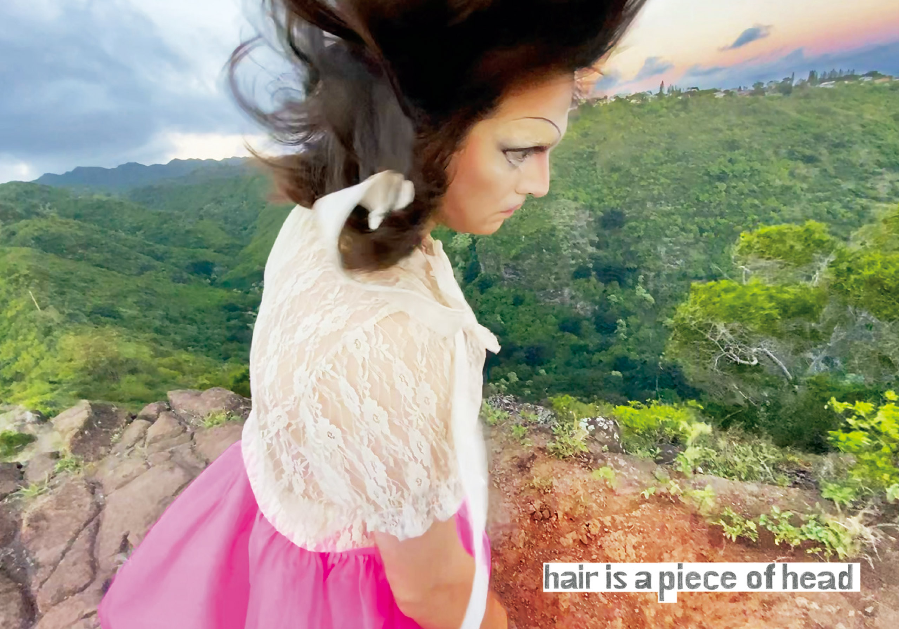
하지민: 결국 작가가 그 당시 하와이(나 광주)에 살았던 사람들의 다양한 삶과 이야기에 대해 관심을 갖고 보아오는 과정에서, 불현듯 꽂히는 문장이나 상황이 생겼을 때 (이 이야기와 저 이야기가 정합적으로 들어맞지는 않아도) 그것들을 같이 둘 수 있다고 판단한 것이잖아요. 이렇게 작가 본인이 느낀 흥미의 포인트를 제가 짐작할 수 있을 때, ‘이런 얘기가 있어’라는 말이 들려오듯이 그 편집의 결과물이 저에게 다가왔을 때 마음이 편해지는 것 같아요.
다른 글들도 그런 마음으로 봤었어요. 글을 접할 때 ‘이런 일이 있었구나, 그전에는 이런 일이 있었고 그다음으로는 또 이런 일이 있었지..’ 막 이런 식으로 소화하듯이 보는 게 아니었고요.
이주요: 맞아. 아카이브 전시를 ‘감상’한다는 일이 일반적으로는 불가능한 것처럼 느껴지지만, 이 전시에서는 되는 거지. Chung이 Clung이 될 수 있고, 그래도 괜찮은, 유예의 공간으로서 전시장이 역할하고 있었으니까. 나도 그런 순간이 되게 좋았어.
김성환의 전시가 단단하게 꽉 짜일 때는 내가 나를 어디에 놔야 될지 모를 때가 많았거든. 근데 오늘은 되게 generous하구나라고 느꼈어. 왜냐하면 자신이 오랜 시간 동안 쌓아왔을 ‘나는 누구이고, 이런 것들을 보고 있어’를 우리 앞에 굉장히 정성스럽게 놔주면서 어떤 것도 강요하지 않았기 때문이야. 그래서 ‘이곳에서 시간을 보내는 게 나쁘지 않네?’ 하는 생각이 들지. Room 1 빨리 보고, Room 2 빨리 보고, Room 3 빨리 보고, 빨리빨리 소화를 해야 된다는 느낌이 없었어.
전시 보러 갈래? - 이주요와 함께 (2)
재훈, 조현진, 하지민
2025.01.17